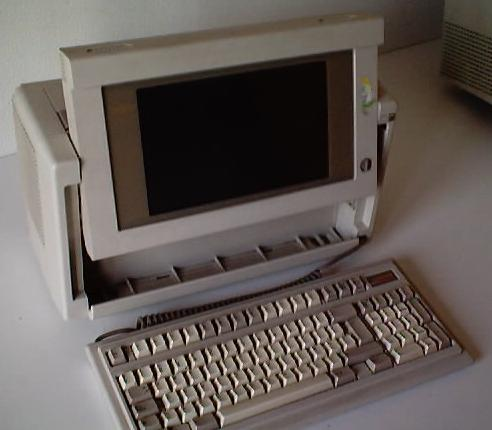

I bought it for 4,000 pta to a woman, who said its cost at the time of first bought was 3,500,000 pta.
| Address | UART | Speed | Format | IRQ | |
|---|---|---|---|---|---|
| COM1 | 03F8 | 16450 | 2400 | 8N1 | 4 |
| Address | IRQ | |
|---|---|---|
| LPT1 | 03BC |
The system board jumper settings are printed in the back of the unit, in the inner face. I can get a scanned version of the mainboard layout. I'll put it here someday.
| Desired Results | Jumper | Setting | |
|---|---|---|---|
| INTERNAL PARALLEL PORT | |||
| Address | |||
| * | Select First Port (3BX) | E1 | 2-3 |
| E2 | 1-2 | ||
| Select Second Port (37X) | E1 | 1-2 | |
| E2 | 2-3 | ||
| Select Third Port (27X) | E1 | 1-2 | |
| E2 | 1-2 | ||
| Disable Internal Parallel Port | E1 | 2-3 | |
| E2 | 2-3 | ||
| Interrupt | |||
| * | Select Primary Interrupt (IRQ7) | E7 | 1-2 |
| Select Alternate Interrupt (IRQ5) | E7 | 2-3 | |
| INTERNAL SERIAL PORT | |||
| NOTE: When using modem or serial ports in the Expansion Unit, ensure that the corresponding port on the system board is disabled. | |||
| * | Select Asynchronous Communications Interface as COM1 (3FX, IRQ4), and COMPAQ Internal Modem or Second Asynchronous Communications Interface as COM2 (2FX, IRQ3) | E3 | 2-3 |
| E4 | 1-2 | ||
| E8 | 1-2 | ||
| E8 | 3-4 | ||
| E9 | 1-2 | ||
| E9 | 3-4 | ||
| Select Asynchronous Communications Interface as COM2 (2FX, IRQ3), and COMPAQ Internal Modem or Second Asynchronous Communications Interface as COM1 (3FX, IRQ4) | E3 | 2-3 | |
| E4 | 1-2 | ||
| E8 | 1-3 | ||
| E8 | 2-4 | ||
| E9 | 1-2 | ||
| E9 | 3-4 | ||
| Select Asynchronous Communications Interface as COM1 (3FX, IRQ4), Disable Internal COM2 | E3 | 2-3 | |
| E4 | 2-3 | ||
| E8 | 1-2 | ||
| E8 | 3-4 | ||
| E9 | 1-3 | ||
| E9 | 2-4 | ||
| Select Asynchronous Communications Interface as COM2 (2FX, IRQ3), Disable Internal COM1 | E3 | 1-2 | |
| E4 | 2-3 | ||
| E8 | 1-2 | ||
| E8 | 3-4 | ||
| E9 | 1-2 | ||
| E9 | 3-4 | ||
| Select COMPAQ Internal Modem or Second Asynchronous Interface as COM1 (3FX, IRQ4), Disable Internal COM2 | E3 | 2-3 | |
| E4 | 2-3 | ||
| E8 | 1-3 | ||
| E8 | 2-4 | ||
| E9 | 1-2 | ||
| E9 | 3-4 | ||
| Select COMPAQ Internal Modem or Second Asynchronous Interface as COM2 (2FX, IRQ3), Disable Internal COM1 | E3 | 1-2 | |
| E4 | 2-3 | ||
| E8 | 1-3 | ||
| E8 | 2-4 | ||
| E9 | 1-3 | ||
| E9 | 2-4 | ||
| Disable Both Internal Serial Ports | E3 | 1-2 | |
| E4 | 1-2 | ||
| E8 | 1-2 | ||
| E8 | 3-4 | ||
| E9 | 1-3 | ||
| E9 | 2-4 | ||
| MASS STORAGE DEVICES | |||
| * | Enable Fixed Disk Drive | E5 | 1-2 |
| Disable Fixed Disk Drive | E5 | 2-3 | |
| * | Select Primary Drive Addersses (1FX, 3FX) | E6 | 2-3 |
| Select Secondary Drive Addresses (17X, 37X) | E6 | 1-2 | |
| 32-BIT MEMORY | |||
| Select Total 32-Bit Memory Installed | |||
| * | 1 Megabyte | E15 | 1-2 |
| E16 | 1-2 | ||
| E17 | 1-2 | ||
| 2 Megabytes | E15 | 2-3 | |
| E16 | 1-2 | ||
| E17 | 1-2 | ||
| 3 Megabytes | E15 | 1-2 | |
| E16 | 2-3 | ||
| E17 | 1-2 | ||
| 4 Megabytes | E15 | 2-3 | |
| E16 | 2-3 | ||
| E17 | 1-2 | ||
| 6 Megabytes | E15 | 1-2 | |
| E16 | 2-3 | ||
| E17 | 2-3 | ||
| 10 Megabytes | E15 | 2-3 | |
| E16 | 2-3 | ||
| E17 | 2-3 | ||
| Select Amount of 32-Bit Memory to be used as Base Memory | |||
| * | 640 Kbytes | E13 | 1-2 |
| E14 | 1-2 | ||
| 512 Kbytes | E13 | 1-2 | |
| E14 | 2-3 | ||
| 256 Kbytes | E13 | 2-3 | |
| E14 | 2-3 | ||
| MISCELLANEOUS | |||
| * | Select 80387-20 Coprocessor Not Installed | E20 | 2-3 |
| Select 80387-20 Coprocessor Installed | E20 | 1-2 | |
| * | Select Power On in Auto Speed Mode | E21 | 1-2 |
| Select Power On in High Speed Mode | E21 | 2-3 | |
| * | Select Power On Plasma Display in Dual (CGA) Mode (3DX, B8000) | E23 | 1-2 |
| Select Power On Plasma Display in Monochrome (MDA) Mode (3BX, B0000) | E23 | 2-3 | |
| * | Enable Failsafe Timer | E19 | 1-2 |
| Disable Failsafe Timer | E19 | 2-3 | |
| * | Reserved | E12 | 1-2 |
| E18 | 2-3 | ||
| E22 | 2-3 | ||
| E24 | 1-2 | ||
| E25 | 1-2 | ||
The next information is next to the table of jumper settings.
The first memory option to be installed must be a 1 Megabyte Memory Upgrade Kit installed in J3 and J4 for a total of 2 Megabytes on the system board.
Install additional 32-Bit memory expansion boards in lower internal options slots and connect with 32-Bit Memory/Modem Interface Board.
Change "32-BIT MEMORY" jumperes as necessary.
Install the 80387-20 Coprocessor in the location shown so that one row of a socket pins surrounding the device remains visible. Change the jumper for the 80387 Coprocessor to the installet position.
Remove plastic cover over the hole in the case for the telephone wire connector. Install the modem or the Second Asynchronous Communications Interface Board in the upper internal option slot and connect it with the 32-Bit Memory/Modem Interface Board.
Change Internal Serial Port jumpers as requiered.
Keys for entering CMOS configuration, you need a special boot disk. This is the image of this 720Kb floppy: Image. I downloaded this disk from the web. I don't know why it's in 3.5" format, while my computer uses 5 1/4" FD.
I only used the CMOS configuration floppy once. I've never had a CMOS data loss, so the system have always booted up correctly, and I haven't ever needed that disk. I've always used snooper's CMOS configuration. UPDATE: Yes, I've needed this disk after disconnecting the batteries that kept the NVRAM on.
These files can give more detailed information about the computer and its configuration, and also some benchmarking.
When I bought it, the system didn't boot up. The HD cable was incorrectly connected; I reversed it, and all the system worked.
After a year of owning it, a bright vertical line has appeared at the center-left of the screen.
I've changed the HD to a "Quantum ProDrive ELS 127Mb A10879", and the floppy drive to a 3.5" 1.44Mb. I've been using this computer at university, as I don't own any other portable.
Althought it is portable, it doesn't wear any kind of power battery. It's been thought only to be used with 220V, 50Hz.
When I took the photos (near August 2002), I wanted to take some with the computer powered on. When I turned the power, a small explosion occurred, and the computer didn't start up (that's why I have photos of its back opened). Today (January 2003) I've opened it, and I've spend half an afternoon getting the power supply unit out. There wasn't any problem. I've rebuilt the computer, and now it starts fine. Well, I had to use the diagnostics disk (because it complained at boot stage), but now it works perfectly.
Started 06/08/2001 / Updated 2003-02-07 23:42:09.000000000 +0100
[top] [home] [Software utilities]
Viric's Web Site / Webmaster: viric / Started 03/08/2001 / Updated mié sep 17 01:30:41 CEST 2003{kind=link}
{kind=link}